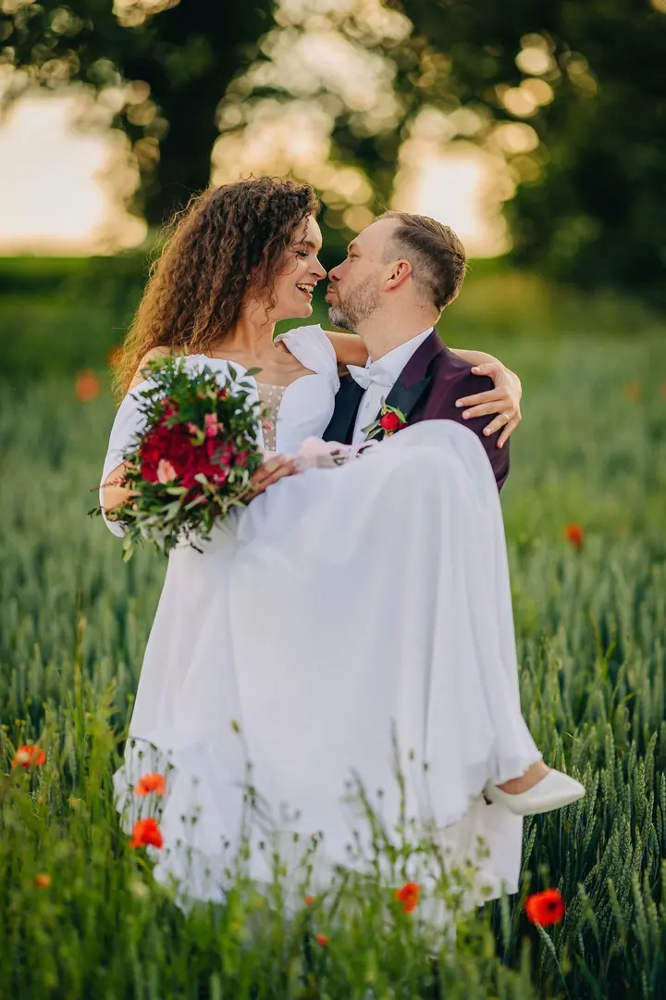
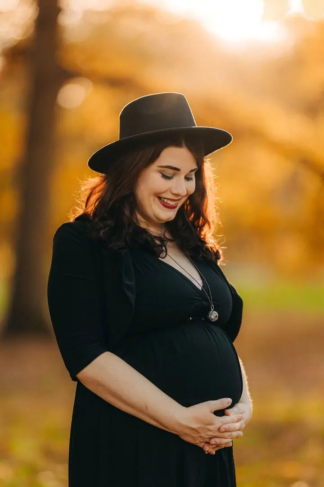
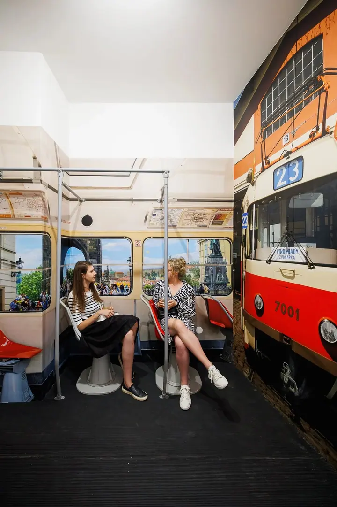
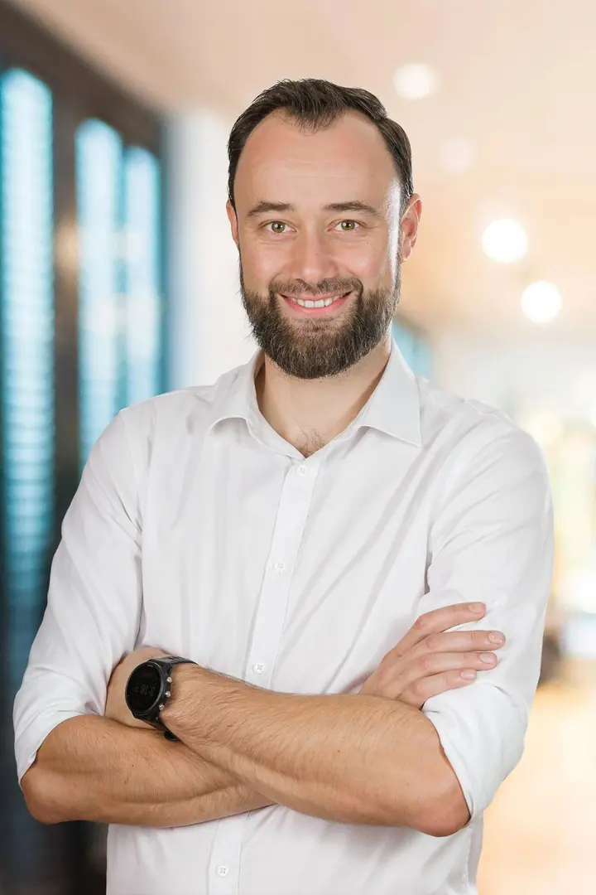
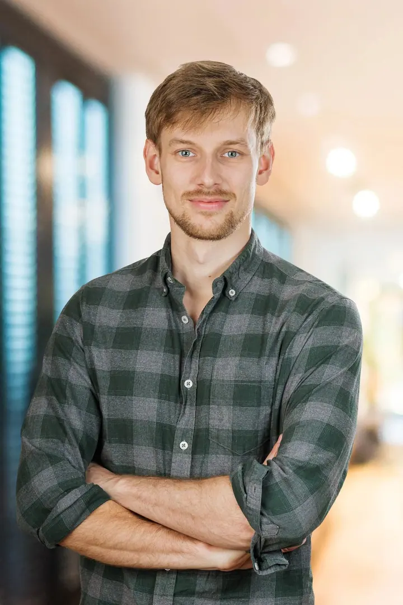

01 / 04
Svatby
Svatby jsou moje srdcová záležitost. Nejradši fotím celý den, abych zachytil celý příběh, který bude vaše svatba vyprávět.
Zeptat se na termín→




Svatba, kterou budete prožívat znovu
Zeptat se na termín →(01) Ahoj
Jmenuji se Lukáš Haupt a jsem fotograf z Prahy. Nejradši fotím svatby , ale potkáte mě i na veletrzích, plesech a firemních akcích . Ve zbytku času fotím portréty, interiéry a vlastně vše, co mě baví.
10let za objektivem
100nafocených svateb
(02) Co fotím
01 / 04
Svatby jsou moje srdcová záležitost. Nejradši fotím celý den, abych zachytil celý příběh, který bude vaše svatba vyprávět.
Zeptat se na termín→02 / 04
Portréty pro firmy, týmy a osobní prezentaci. Čisté světlo a uvolněný výraz, který vám bude sedět.
Zeptat se na termín→03 / 04
Fotografie bytů a interiérů pro prodej, pronájem nebo prezentaci. Světlé a přehledné, aby prostor vynikl.
Zeptat se na termín→Dále nabízím
Fotím velké veletrhy, vystoupení zahraničních DJs, maturitní plesy i firemní akce velkých korporací a malých start-upů.
↗(04) Postup
Od první zprávy po hotovou galerii.
Krok 1 z 4
Pošlete mi přes formulář termín a místo, kde chcete fotit, a pár slov o tom, co plánujete.
Krok 2 z 4
Ceník vám rád pošlu e-mailem ve formě nabídkové prezentace. Případné otázky spolu probereme.
Krok 3 z 4
U svatby preferuji celodenní focení, abych zachytil celý příběh dne. Na akcích se pohybuji nenápadně a fotím to, co se opravdu děje.
Krok 4 z 4
Fotky pečlivě vyberu a upravím a pošlu vám je, abyste si mohli celý den prožít znovu.
Smích, radost i slzy štěstí.
(05) Za objektivem
Už víc než 10 let je focení mojí vášní, koníčkem a zároveň prací. Mojí srdcovou záležitostí jsou především svatby. Mohl jsem s novomanželi prožít víc než 100 svatebních dnů a potkat při tom tisíce skvělých lidí.
Mimo svatby fotím hlavně eventy, od velkých veletrhů jako For Beauty, For Kids nebo Pragodent, přes vystoupení zahraničních DJs a maturitní plesy až po firemní akce velkých korporací i malých start-upů. K tomu fotím portréty, produkty a interiéry.
Vždycky kladu důraz na profesionální vystupování, ale hlavně na lidský přístup. Na každé focení se pečlivě připravím, aby z něj vznikly fotky, ke kterým se budete rádi vracet.
Lukáš
Lukáš Haupt · Svatební a eventový fotograf
Ceník posílám e-mailem ve formě nabídkové prezentace. Napište mi termín a místo svatby a já vám ho rád pošlu.
Ano, celodenní focení preferuji. Mám tak šanci zachytit celý příběh a neuteče mi žádný důležitý moment.
Ano, eventy jsou vedle svateb mojí hlavní prací. Fotím veletrhy, koncerty a DJ shows, maturitní plesy i firemní akce velkých i malých firem.
Jsem z Prahy, ale fotím i jinde. Do formuláře napište termín a lokalitu a domluvíme se.
(07) Kontakt
Napište pár vět o tom, co si představujete, a termín, který se vám hodí.